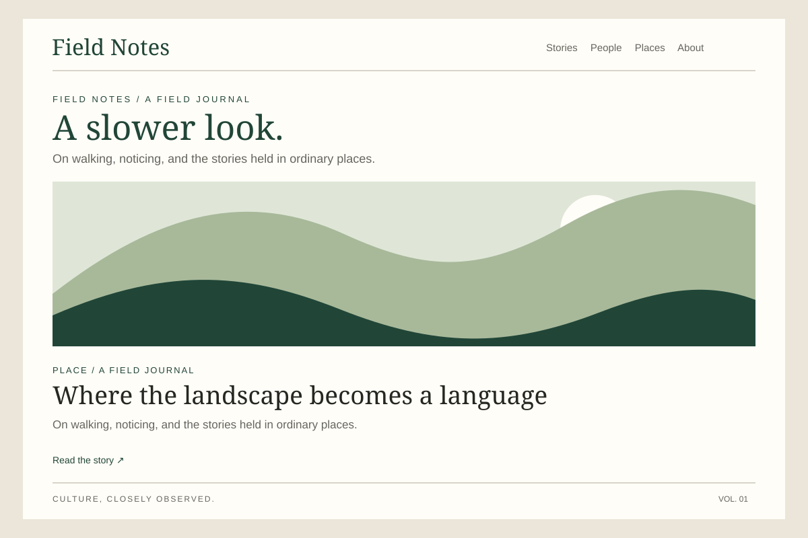
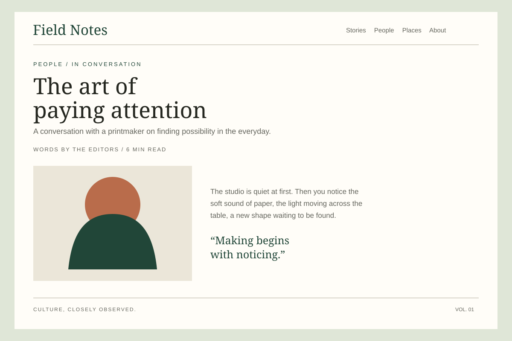

01 / The challenge
A journal with room to look closer.
Cultural publishing can feel caught between the rush of a feed and the stillness of print. The challenge was to imagine a digital journal that preserves a magazine’s character while making its stories easy to find, browse, and read.
02 / Audience
For the quietly curious.
Field Notes is imagined for readers drawn to independent culture, thoughtful publishing, and stories rooted in place. This audience is a creative premise for the concept—not a finding from user research.

03 / Solution
Print’s pace, made for the screen.
We built the concept around an editorial idea: culture, closely observed. An expressive serif masthead and forest-green palette give the journal its voice, while restrained navigation and a consistent category system keep the experience clear. Generous margins, readable text, and deliberate changes of scale bring the pace of print to the screen.
Three deliberate choices
A clear way in
Stories, People, and Places offer simple entry points without flattening the journal’s personality.
Space for the story
A focused reading column, useful metadata, and measured typography help long-form content breathe.
One idea, every screen
The layout becomes a single column on mobile; the hierarchy and complete editorial content stay intact.

04 / Outcomes & reflections
A coherent direction, not a launched product.
The result is a responsive editorial design concept, not a launched publication. No audience testing or measured performance results are claimed. The exploration shows how a distinctive identity can support, rather than compete with, the content it carries.
A next phase would test story discovery and reading comfort with real readers, refine accessibility details, and extend the visual system across a fuller publication. For this concept, the clearest lesson is that editorial hierarchy works beautifully when it gives the story room.